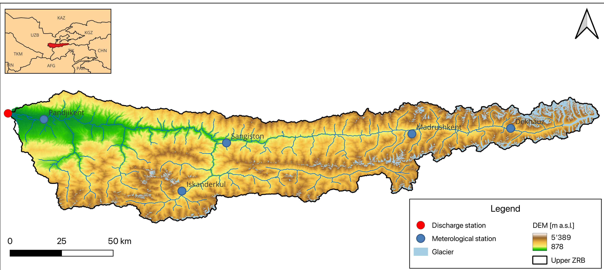
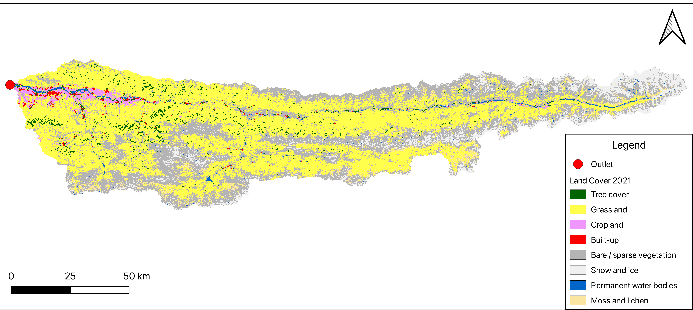
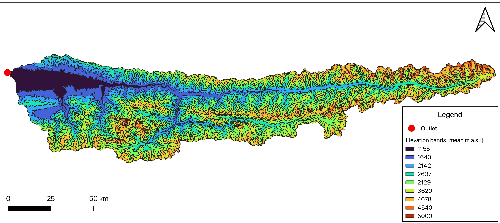

13 Watershed characterisation
Theory
In this chapter, we look at land cover and the definition of hydrological response units (HRU’s) and their importance in hydrological modeling.
13.1 Land use and land cover
In hydrological modelling, we are transforming rainfall into a runoff called rainfall-runoff transformation. When precipitation reaches the ground it can take various pathways. It can be stored as ice or snow, directly evaporate, infiltrate into the ground etc.
Land cover (LC) maps represent spatial information on different types (classes) of physical coverage of the Earth’s surface, e.g. forests, grasslands, croplands, lakes, wetlands.
The land cover is a key influencer for runoff generation and the estimation of evapotranspiration in the hydrology of watersheds. Therefore, it is essential to use accurate and reliable LC data in hydrological modelling.
Several datasets are available globally and free of charge. Below is a brief list of the most recent land cover data products:
WorldCover project, part of the European Space Agency’s Earth observation program provides global land cover products for 2020 and 2021 at 10 m resolution, developed and validated in near-real time based on Sentinel-1 and Sentinel-2 data.
13.2 Hydrological response units (HRUs)
Hydrological response units (HRUs) are areas that have common properties which are important from the hydrological perspective for runoff generation: for instance similar slope, elevation, aspect, soil type, vegetation cover, landuse. They are areas of land that are assumed to respond similarly to weather input. In each HRU the land based portion of the hydrological cycle is simulated. HRUs are used in hydrological models to represent the spatial variability of the catchment. The number of HRUs in a catchment depends on the spatial variability of the catchment and the resolution of the input data.
Exercise 2: Basin characterisation
The goal of the second exercise is to fill in Table 1 with data from your catchment. This table includes key characterisations relevant to hydrological modelling for your specific catchment area.
In this exercise, we will also learn how to create a map visualizing your study area and a map illustrating the different land cover types, similar to the one shown in Figure 13.1 and Figure 13.2 for the upper ZRB.


This will be done in several parts, each supported by tutorial videos in both English and Russian:
Part 1: DEM Land Cover
Part 2: Glacier outlines and Study area map
Part 3: HRU’s
Part 4: Discharge data
Part 5: Climate data
Part 1: DEM and Land Cover
In this chapter, we will fill out the sections Geography and Land Cover in Table 1 and download the digital elevation model and land cover data within our catchment boundaries, which we delineated in Chapter 12. To download the DEM and Land cover data we will use the Google Earth Engine (GEE). Google Earth Engine is a cloud-based platform for planetary-scale environmental data analysis. It hosts a vast amounts of environmental data, enabling users to download and perform various analyses and processing tasks.
In this part of the exercise, we will use the GEE to download the SRTM Digital Elevation Model and Land Cover data (Source) and calculate Land cover type statistics using the GEE Link in combination with the following tutorial.
There are several other ways to download the DEM and Land Cover data. Here is a turorial how to donwload the DEM from the Earth Explorer or use the QGIS Plugin. Land cover data can also be obtained directly from the ESA WorldCover webpage.
English version:
Russian version:
Part 2: Glacier outlines and visualization
In the second part of this exercise, we’ll download glacier outlines from the Randolph Glacier Inventory (RGI) v7.0. For more details, refer to #sec-glacier-outlines. The tutorial videos in English and Russian explain how to download the data and import it into QGIS. They also demonstrate how to visualize the data and how to produce the study are map in Figure 13.1 and the Land cover map in Figure 13.2.
English version:
Russian version:
Part 3: Discharge data
Part 4: Hydrological response units (HRUs)
In the fourth part of the exercise, we will utilize elevation bands to delineate HRUs, as elevation significantly influences hydrological processes like precipitation patterns and temperature gradients. Refer to Figure [insert figure number] for an illustration of elevation bands in the upper Zarafshan River basin, as an example for this approach.

Part 5: Climate data
13.3 References
“NASA Shuttle Radar Topography Mission (SRTM).” 2013. NASA. https://earthdata.nasa.gov/learn/articles/nasa-shuttle-radar-topography-mission-srtm-version-3-0-global-1-arc-second-data-released-over-asia-and-australia.
RGI Consortium. 2023. “Randolph Glacier Inventory - a Dataset of Global Glacier Outlines, Version 7.” National Snow; Ice Data Center. https://doi.org/10.5067/F6JMOVY5NAVZ.
Zanaga, Daniele, Ruben Van De Kerchove, Wanda De Keersmaecker, Niels Souverijns, Carsten Brockmann, Ralf Quast, Jan Wevers, et al. 2021. “ESA WorldCover 10 m 2020 V100.” Zenodo. https://doi.org/10.5281/zenodo.5571936.